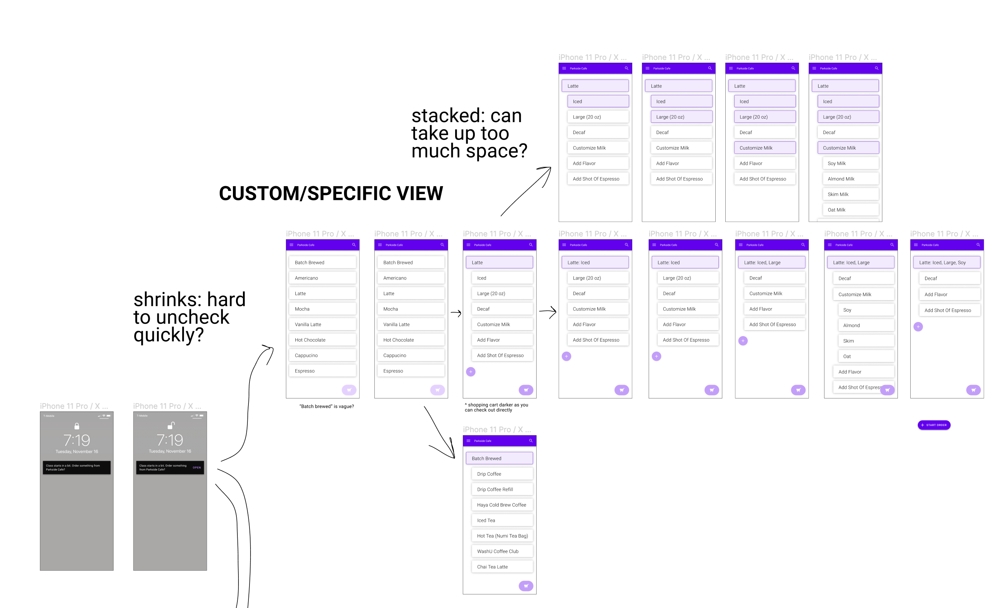
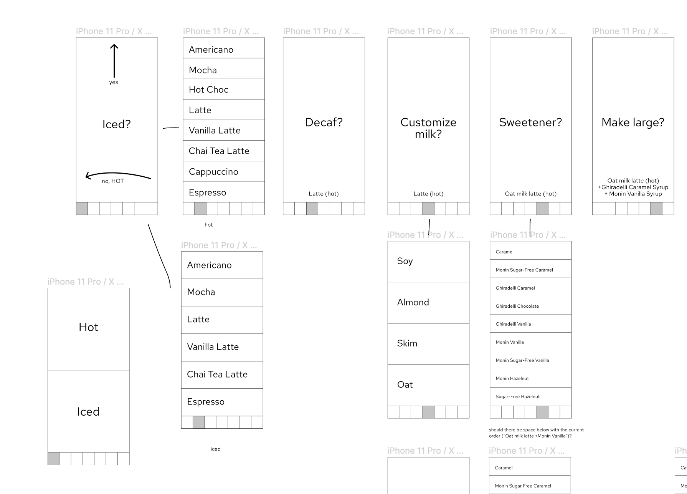
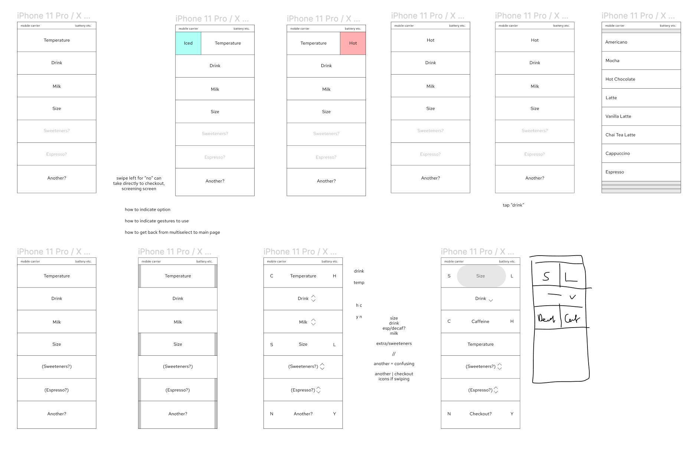
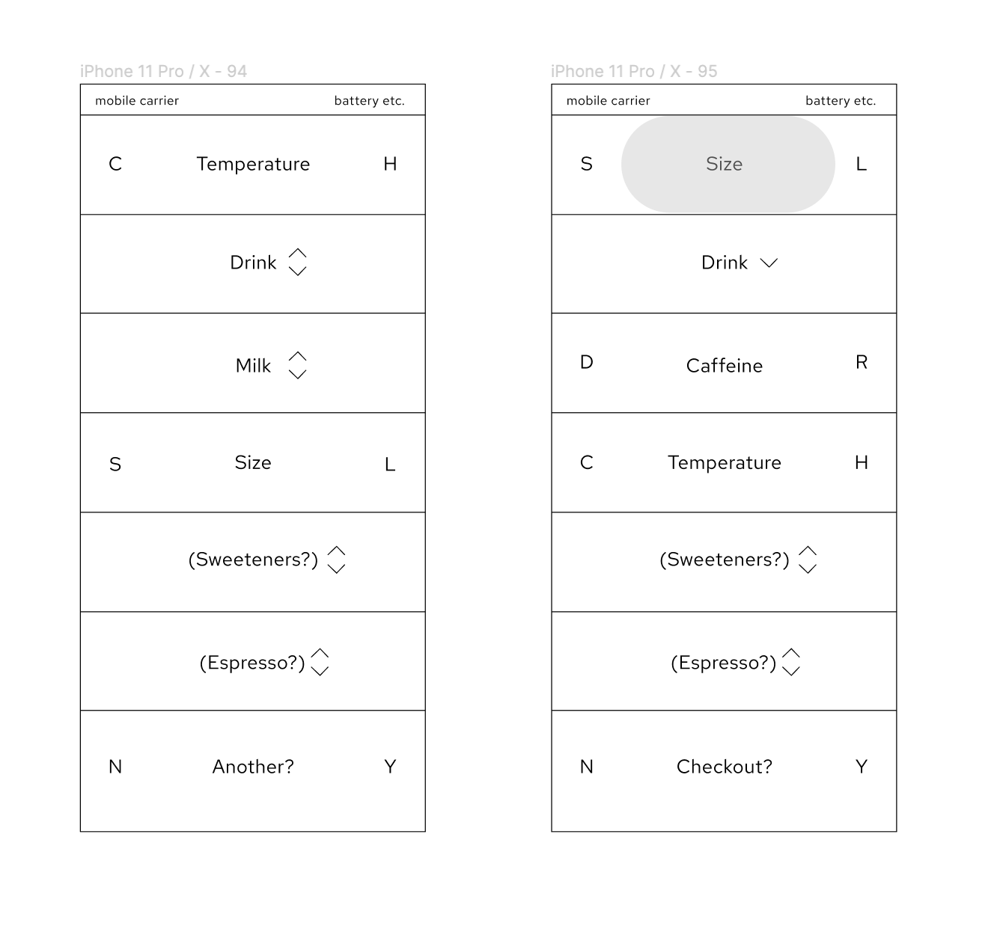

User Research, Interface Design
Mobile prototype
Timeline: 10 weeks
Tools: Figma, Webflow
Background
During the fall 2021 semester, WashU dining switched to a system of hybrid ordering, integrating the GrubHub Campus app with in-person kiosk stations. To comply with public health and safety measures, Parkside Cafe—a dining facility near the art school—has had to adjust to this new hybrid model. Situated between the art and engineering buildings, the location is especially popular.
Goals
After conversations with Parkside staff and interviews with both students and a university dining services director, I proposed a separate mobile app for Parkside's coffee bar. As one of the many moving parts of the cafe (which offers both full meals and grab & go items), the coffee bar is at times overshadowed by the "full meal/food" section of the cafe, which are more prominently and clearly displayed on the GrubHub app.
Moreover, Parkside Cafe's physical layout adds to the confusion: the space is divided into the "full meal/food" side of the cafe and the "coffee/grab & go" side, neither of which is clearly labeled by surrounding signage. Due to these and other factors—daily screening checks, a lack of space for those waiting—the staff have had to juggle orders, some of which get lost in the system, resulting in students left uncertain about their orders.
This app aims to offer Parkside coffee bar regulars a reliable, fast, and intuitive ordering experience.
Concepting
Inspired by Google's Material design system, early wireframes explore tiling and indenting cards to indicate hierarchy. During these initial sketches, I was also interested in ergonomics and sought to balance familiar gestures of swiping and tapping with micromoments of surprise. However after user tests and discussions about popular apps that have defined our swiping habits (e.g. Tinder, TikTok), I realized that the delight in this gesture may be gimmicky, confusing, and unhelpful for those in a rush. Ultimately I settled on a more fixed layout in order to keep the user's journey as short and direct as possible.
   Sketches and wireframes of early ideas for screen-to-screen transitions.
Thinking about how to indicate choices through navigation while adherting to an ultralinear structure.
Results
The final mobile prototype moves between two pages—a primary drink ordering screen and a detailed page for fields with multiple options. Subtle tiling to rearrange each row's order in the stack likewise serves as a visual cue, keeping the flow linear.
[VD: demo of a hot chocolate order in the Parkside beverage app.
The user makes a series of choices on a fixed primary screen,
with multiple choice questions moving them into a page to the side.]
Page transition animation prototyped in Webflow.
Insights + Room for Improvement
During the early stages of this project I struggled with defining my scope, as I was interested in making something for both staff and students. Luckily though, upon several reality checks and a closer examination of the weaknesses of the current food ordering workflow on site, I was able to narrow my design to address a very specific need. Through this project I've come to understand the importance of testing early and often, as my final switch from Figma to a more high fidelity, Webflow prototype was a little rushed.